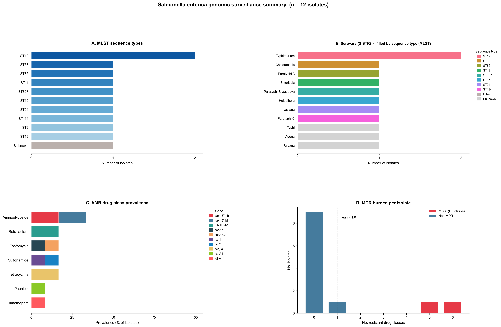
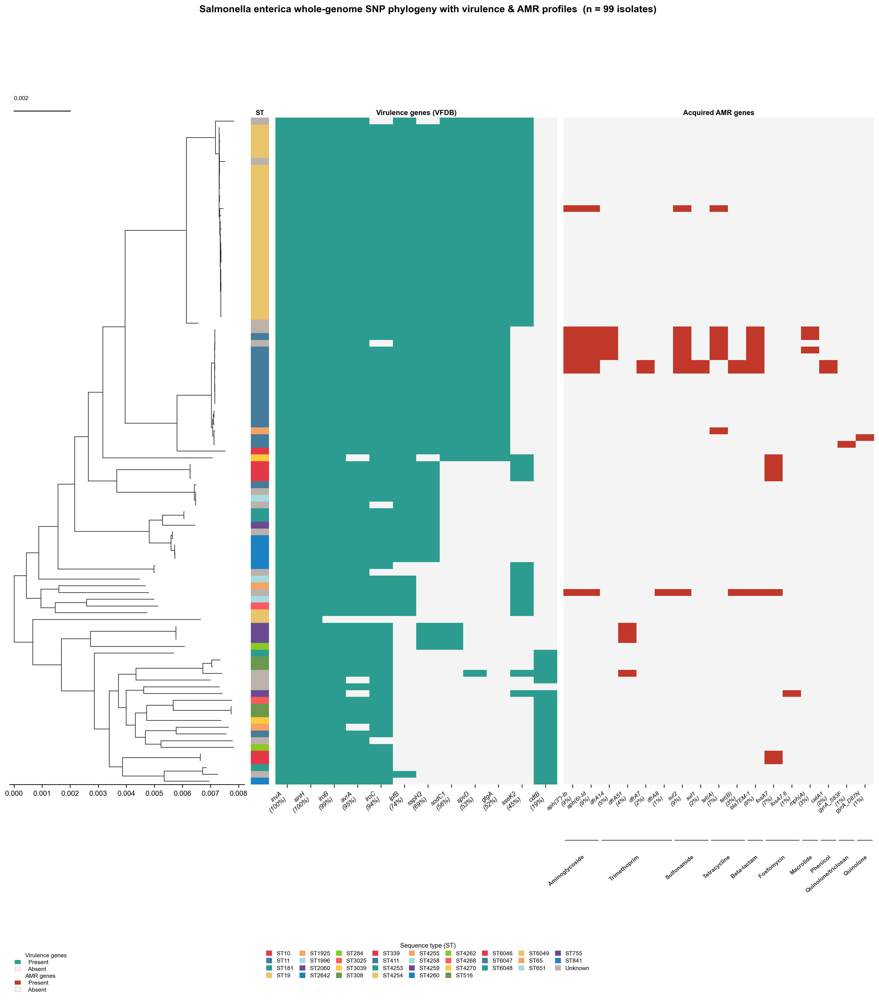
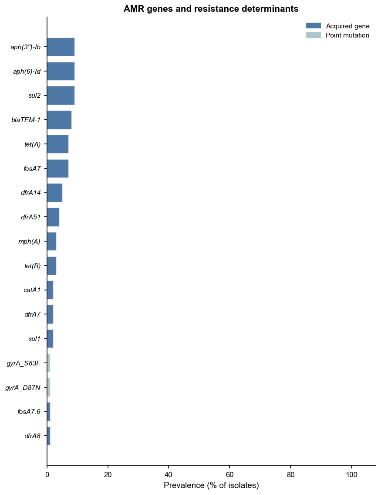
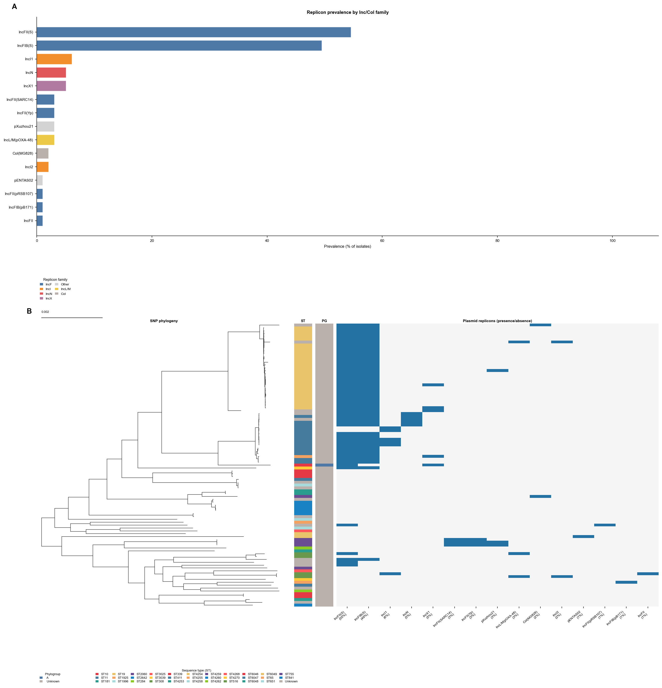
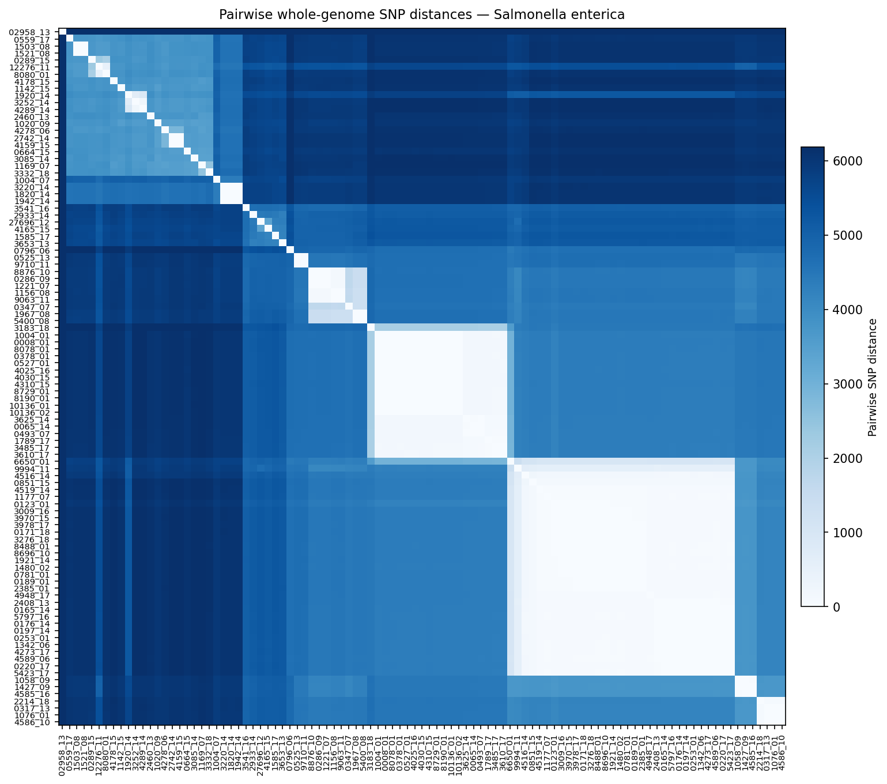
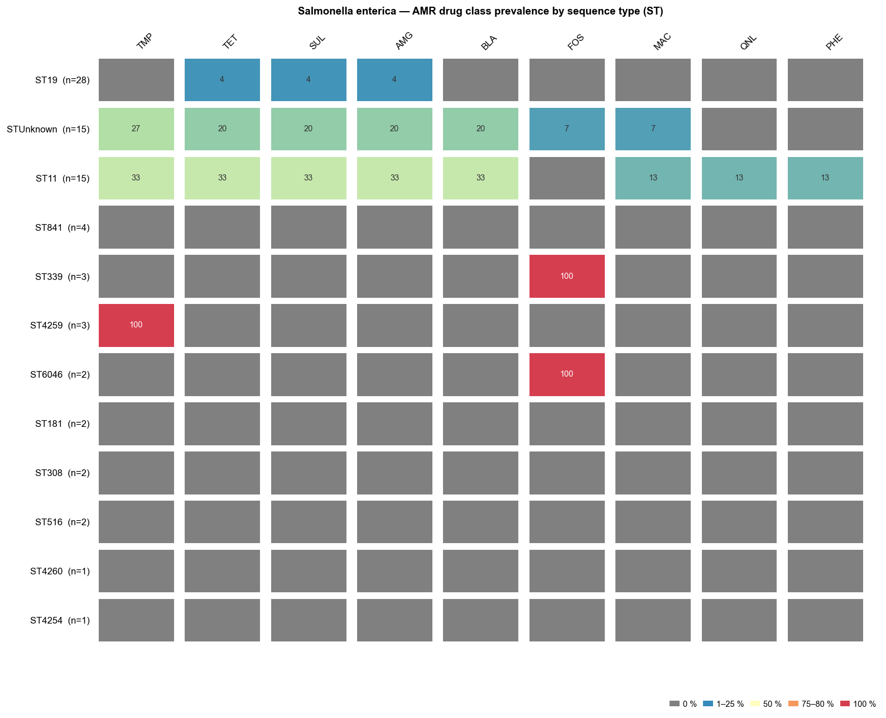
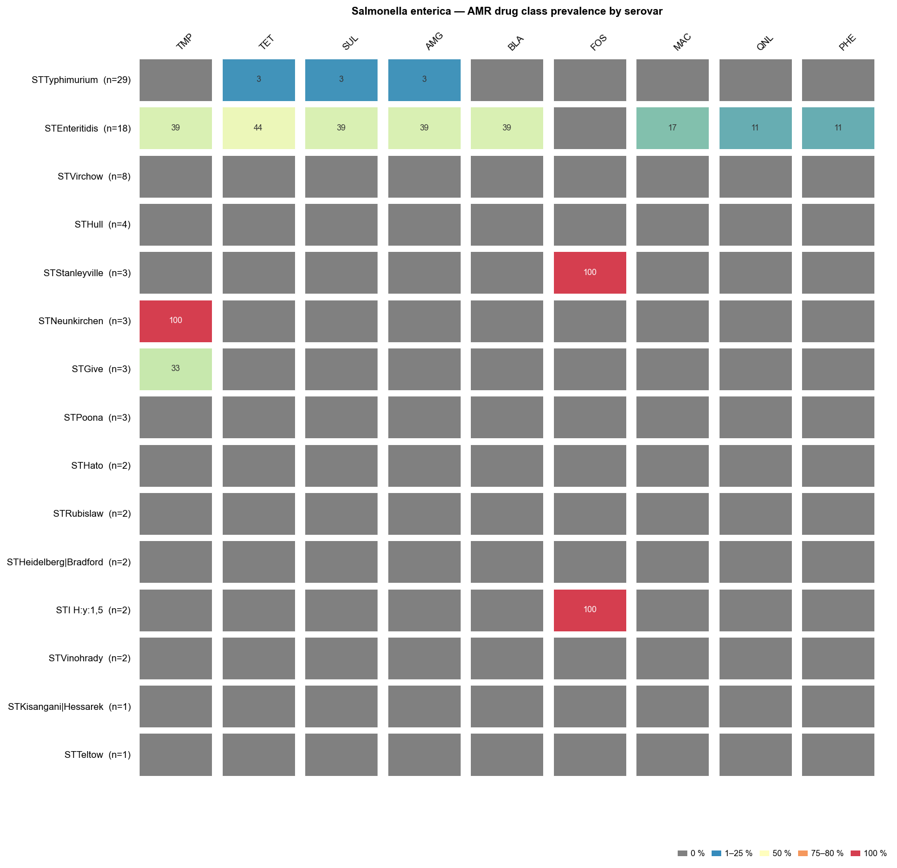
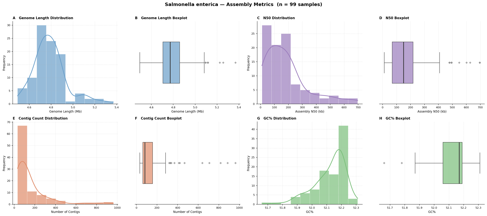

This vignette demonstrates the outputs produced by enteric-typer when run on 99 non-typhoidal Salmonella enterica (NTS) clinical isolates from The Gambia.
Genomes are from Darboe et al. (2022) Microbial Genomics 8(3): mgen000785, a study characterising the genomic diversity and antimicrobial resistance of NTS associated with human disease in The Gambia. Isolates were recovered from patients attending health facilities in both Eastern Gambia (collected 2001) and Western Gambia (collected 2006–2018), covering invasive disease (bacteraemia) and gastroenteritis.
| Attribute | Detail |
|---|---|
| Species | Salmonella enterica (non-typhoidal) |
| Isolates | 99 (from 93 patients; some patients contributed >1 isolate) |
| Clinical source | Invasive (bacteraemia), gastroenteritis, other sites |
| Host | Human |
| Geography | The Gambia, West Africa |
| Collection period | 2001–2018 |
| Institution | MRC Unit The Gambia (MRCG) at LSHTM |
| BioProject | PRJEB38968 (ENA/SRA) |
| Assemblies | ENA BioSamples SAMEA6991082–SAMEA6991180 |
# Download all assemblies for BioProject PRJEB38968 using the ENA FTP
# (requires ena-ftp-downloader or wget; adjust as needed)
wget -r -nd -A "*.fasta.gz" \
"https://www.ebi.ac.uk/ena/portal/api/filereport?accession=PRJEB38968&result=assembly&fields=submitted_ftp&format=tsv" \
-O assembly_urls.tsv
# Or use the ENA browser to bulk-download assemblies:
# https://www.ebi.ac.uk/ena/browser/view/PRJEB38968All 99 ENA BioSample accessions and their internal LSHTM identifiers
(format NNNN_YY, where YY is the 2-digit
collection year):
| ENA BioSample | LSHTM ID |
|---|---|
| SAMEA6991082 | 02958_13 |
| SAMEA6991083 | 1004_07 |
| SAMEA6991084 | 1942_14 |
| SAMEA6991085 | 1820_14 |
| SAMEA6991086 | 3220_14 |
| SAMEA6991087 | 12276_11 |
| SAMEA6991088 | 8080_01 |
| SAMEA6991089 | 0559_17 |
| SAMEA6991090 | 1503_08 |
| SAMEA6991091 | 1521_08 |
| SAMEA6991092 | 2460_13 |
| SAMEA6991093 | 4178_15 |
| SAMEA6991094 | 1142_15 |
| SAMEA6991095 | 1920_14 |
| SAMEA6991096 | 3252_14 |
| SAMEA6991097 | 4289_14 |
| SAMEA6991098 | 3085_14 |
| SAMEA6991099 | 1169_07 |
| SAMEA6991100 | 3332_18 |
| SAMEA6991101 | 0664_15 |
| SAMEA6991102 | 1020_09 |
| SAMEA6991103 | 4278_06 |
| SAMEA6991104 | 2742_14 |
| SAMEA6991105 | 4159_15 |
| SAMEA6991106 | 3541_16 |
| SAMEA6991107 | 2933_14 |
| SAMEA6991108 | 1585_17 |
| SAMEA6991109 | 3653_13 |
| SAMEA6991110 | 27696_12 |
| SAMEA6991111 | 4165_15 |
| SAMEA6991112 | 0525_13 |
| SAMEA6991113 | 9710_11 |
| SAMEA6991114 | 0347_07 |
| SAMEA6991115 | 1967_08 |
| SAMEA6991116 | 5400_08 |
| SAMEA6991117 | 1156_08 |
| SAMEA6991118 | 9063_11 |
| SAMEA6991119 | 8876_10 |
| SAMEA6991120 | 0286_09 |
| SAMEA6991121 | 1221_07 |
| SAMEA6991122 | 1058_09 |
| SAMEA6991123 | 1427_09 |
| SAMEA6991124 | 4585_16 |
| SAMEA6991125 | 2214_18 |
| SAMEA6991126 | 0317_13 |
| SAMEA6991127 | 1076_01 |
| SAMEA6991128 | 4586_10 |
| SAMEA6991129 | 0796_06 |
| SAMEA6991130 | 3183_18 |
| SAMEA6991131 | 1789_17 |
| SAMEA6991132 | 3485_17 |
| SAMEA6991133 | 3610_17 |
| SAMEA6991134 | 0493_07 |
| SAMEA6991135 | 0065_14 |
| SAMEA6991136 | 3625_14 |
| SAMEA6991137 | 1004_01 |
| SAMEA6991138 | 0527_01 |
| SAMEA6991139 | 0008_01 |
| SAMEA6991140 | 0378_01 |
| SAMEA6991141 | 8078_01 |
| SAMEA6991142 | 4025_16 |
| SAMEA6991143 | 4030_15 |
| SAMEA6991144 | 4310_15 |
| SAMEA6991145 | 10136_01 |
| SAMEA6991146 | 8190_01 |
| SAMEA6991147 | 10136_02 |
| SAMEA6991148 | 8729_01 |
| SAMEA6991149 | 6650_01 |
| SAMEA6991150 | 9994_11 |
| SAMEA6991151 | 0851_15 |
| SAMEA6991152 | 0220_17 |
| SAMEA6991153 | 5423_17 |
| SAMEA6991154 | 4589_06 |
| SAMEA6991155 | 2408_13 |
| SAMEA6991156 | 1342_06 |
| SAMEA6991157 | 4273_17 |
| SAMEA6991158 | 0165_14 |
| SAMEA6991159 | 0253_01 |
| SAMEA6991160 | 0176_14 |
| SAMEA6991161 | 0197_14 |
| SAMEA6991162 | 4516_14 |
| SAMEA6991163 | 5797_16 |
| SAMEA6991164 | 4948_17 |
| SAMEA6991165 | 1177_07 |
| SAMEA6991166 | 4519_14 |
| SAMEA6991167 | 1921_14 |
| SAMEA6991169 | 1480_02 |
| SAMEA6991170 | 0189_01 |
| SAMEA6991171 | 0781_01 |
| SAMEA6991172 | 2385_01 |
| SAMEA6991173 | 3009_16 |
| SAMEA6991174 | 3970_15 |
| SAMEA6991175 | 8488_01 |
| SAMEA6991176 | 0123_01 |
| SAMEA6991177 | 8696_10 |
| SAMEA6991178 | 3978_17 |
| SAMEA6991179 | 0171_18 |
| SAMEA6991180 | 3276_18 |
| SAMEA9699386 | 0289_15 |
nextflow run main.nf \
-profile conda \
--input_dir gambia_salmonella_assemblies/ \
--outdir results/salmonella_typer_results.tsv)One row per sample. Key columns:
| Column | Description |
|---|---|
mlst_st |
Achtman 7-gene MLST sequence type (senterica_achtman_2
scheme) |
mlst_st_complex |
MLST ST complex (where defined) |
sistr_serovar |
Predicted serovar (SISTR, Kauffmann-White scheme) |
sistr_serovar_antigen |
Predicted antigen formula |
sistr_cgmlst_ST |
cgMLST330 sequence type (SISTR) |
sistr_O / sistr_H1 /
sistr_H2 |
Predicted O and H antigens |
sistr_qc |
SISTR QC status (PASS / WARNING / FAIL) |
amrfinder_acquired_genes |
Acquired AMR genes (intrinsic genes excluded by AMRrules) |
amrfinder_drug_classes |
Drug classes with acquired resistance |
plasmidfinder_replicons |
Plasmid replicon types detected by PlasmidFinder |
Figure 1. Population-level summary of 99 clinical
non-typhoidal Salmonella enterica isolates from The
Gambia. Four panels are shown. (A) Sequence
type (ST) distribution: horizontal bar chart of MLST STs by count
(Achtman 7-gene scheme, senterica_achtman_2), reflecting
the dominant lineages circulating in Gambian NTS disease.
(B) Serovar distribution coloured by MLST sequence
type: stacked horizontal bar chart where each bar represents a serovar
predicted by SISTR and fill colours indicate MLST sequence types (up to
the top 12 STs are shown individually; remaining STs are grouped as
“Other” and isolates with no ST call as “Unknown”). Bars retain the ST
colours of their constituent isolates even when the serovar itself falls
into the “Other / Unknown” bin, enabling rapid assessment of serovar–ST
concordance and within-serovar lineage diversity. (C)
Acquired AMR drug class prevalence: horizontal bar chart showing the
proportion of isolates with acquired resistance in each drug class, with
intrinsic resistance genes excluded (AMRrules classification).
Clinically important resistance classes (e.g., fluoroquinolones,
third-generation cephalosporins) are highlighted where present.
(D) Multi-drug resistance (MDR): proportion of isolates
with acquired resistance to ≥ 3 antibiotic drug classes.

Figure 2. Whole-genome SNP phylogeny of 99 clinical Salmonella enterica isolates from The Gambia, annotated with sequence type, virulence, and acquired AMR profiles. The maximum-likelihood tree was inferred by IQ-TREE 2 (ModelFinder Plus automatic model selection) from a whole-genome SNP alignment generated by SKA2 (split k-mer alignment, k=31) without a reference genome. The left-most strip encodes sequence type (ST), with each unique ST shown in a distinct colour and a legend below the figure. The heatmap columns show virulence gene presence/absence (VFDB; teal = present, light grey = absent) and acquired AMR gene presence/absence (red = present, light grey = absent), with gene names labelled along the bottom. The scale bar (top left) represents substitutions per site. Clustering of closely related isolates from the same collection period or clinical source reflects the epidemiological structure of NTS disease in The Gambia.

Figure 3. Prevalence of acquired antimicrobial resistance genes across 99 clinical Salmonella enterica isolates from The Gambia. Horizontal bar chart showing the number of isolates carrying each acquired AMR gene detected by AMRFinder Plus. Resistance genes are grouped and labelled by drug class. Intrinsic resistance genes (as classified by AMRrules) are excluded. The pattern of acquired resistance reflects the clinical AMR landscape in Gambian NTS, including genes conferring resistance to aminoglycosides, β-lactams, sulfonamides, and tetracyclines commonly reported in African NTS.

Figure 4. Plasmid replicon overview across 99 clinical Salmonella enterica isolates from The Gambia. Two-panel figure summarising plasmid replicon diversity. (A) Horizontal bar chart of replicon prevalence (% of isolates), with bars coloured by Inc/Col replicon family. IncFII(S) and IncFIB(S)—Salmonella-associated IncF plasmids—are the most prevalent replicons, detected in approximately 54% and 49% of isolates respectively. Non-IncF replicons including IncI1, IncN, and IncX1 are present at lower frequency. The detection of IncL/M(pOXA-48) in a small number of isolates is notable given its association with OXA-48-type carbapenemase-encoding plasmids. Drug-class breakdown by AMR co-occurrence is not shown: these are fragmented short-read assemblies in which replicon sequences and AMR gene cassettes routinely land on different contigs of the same plasmid, making same-contig attribution unreliable. (B) Midpoint-rooted whole-genome SNP phylogeny (IQ-TREE 2) with ST annotation strip and a per-isolate plasmid replicon presence/absence heatmap (blue = present, white = absent).

Figure 5. Pairwise whole-genome SNP distance heatmap for 99 clinical Salmonella enterica isolates from The Gambia. Symmetric heatmap of pairwise SNP distances computed from the SKA2 whole-genome SNP alignment. Samples are ordered by hierarchical clustering. Colour intensity encodes SNP distance (lighter = more closely related, darker = more divergent). Clusters of near-identical isolates may indicate outbreak-related transmissions or clonal expansions within the clinical setting.

Figure 6. AMR drug class prevalence by MLST sequence type (ST) across 99 clinical Salmonella enterica isolates from The Gambia. Tile heatmap showing the percentage of isolates within each ST carrying acquired resistance to each drug class, as detected by AMRFinder Plus. Rows represent the most common STs (Achtman 7-gene scheme), sorted by isolate count; columns represent drug classes sorted by overall prevalence. Cell colour encodes percentage: grey = 0 %; cream through orange to dark red = low to high prevalence; purple = 100 %. Percentage values are shown inside each cell. Intrinsic resistance genes are excluded.

Figure 7. AMR drug class prevalence by serovar across 99 clinical Salmonella enterica isolates from The Gambia. Tile heatmap showing the percentage of isolates within each SISTR-predicted serovar carrying acquired resistance to each drug class. Rows represent the most common serovars sorted by isolate count; columns represent drug classes sorted by overall prevalence. Colour and label encoding are identical to Fig 6.

Figure 8. Assembly quality metrics for 99 clinical Salmonella enterica isolates from The Gambia. Four-panel figure summarising per-assembly statistics computed by enteric-typer. (A) Genome length (bp). (B) Number of contigs. (C) N50 (bp). (D) GC content (%). Each panel shows a violin plot overlaid with a box plot and individual data points. Dashed reference lines indicate expected values for Salmonella enterica (genome length ~4.8 Mb; GC% ~52 %).

Darboe S, Bradbury RS, Phelan J, Kanteh A, Muhammad A-K, Worwui A, Yang S, Nwakanma D, Perez-Sepulveda B, Kariuki S, Kwambana-Adams B, Antonio M (2022). Genomic diversity and antimicrobial resistance among non-typhoidal Salmonella associated with human disease in The Gambia. Microbial Genomics 8(3): mgen000785. https://doi.org/10.1099/mgen.0.000785